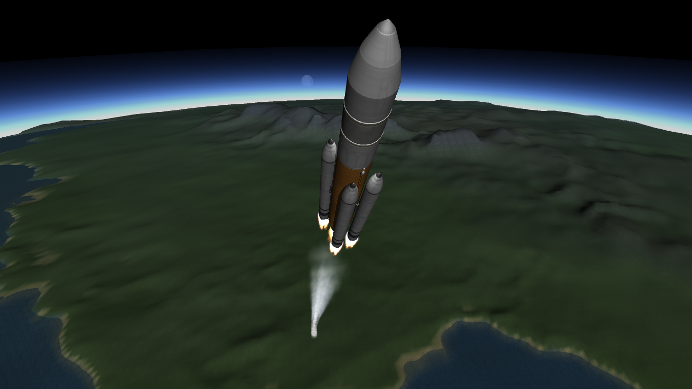
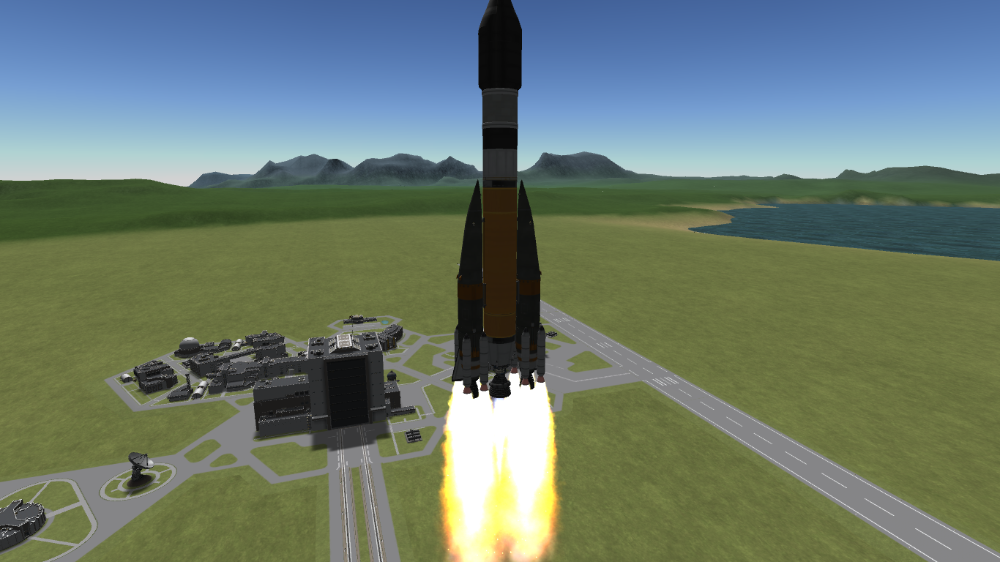
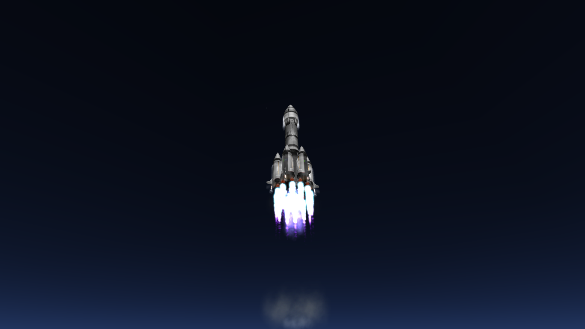
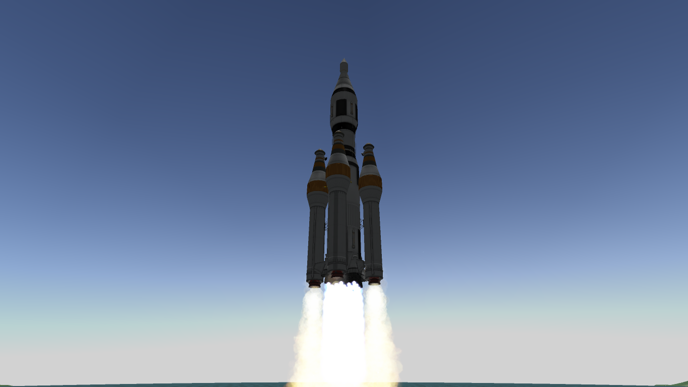
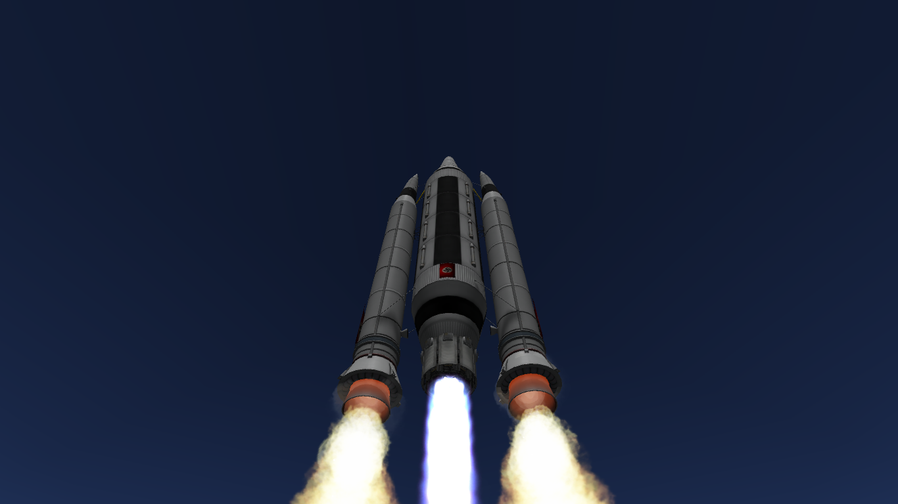
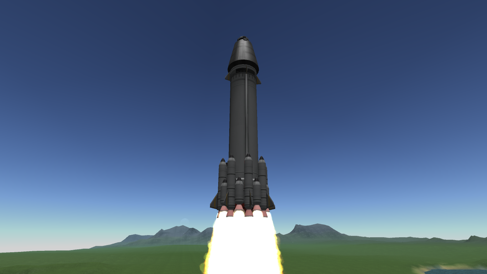
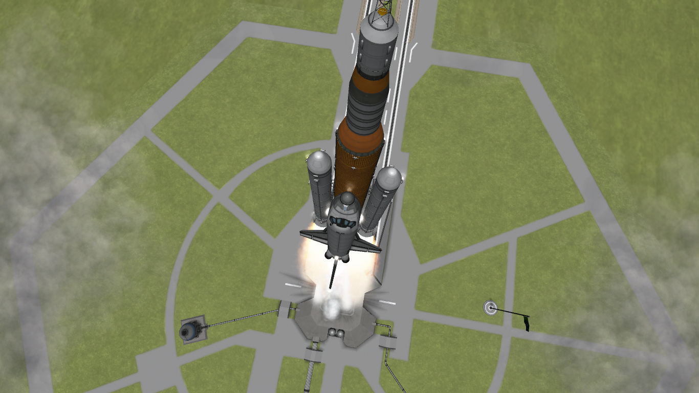
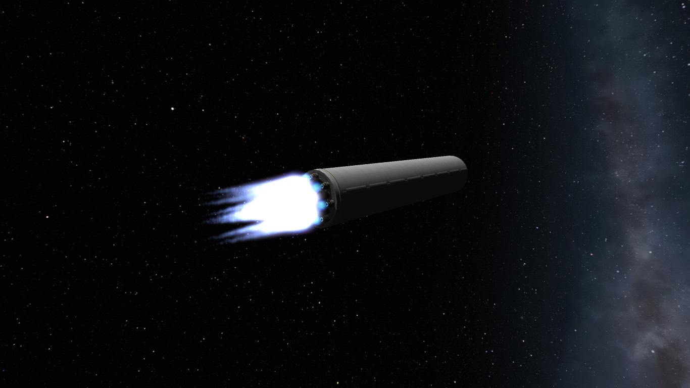

Edelweiss 2
RO: Prima racheta operationala din seria Edelweiss(german:Edelweiß).
ENG: First operational rocket in the Edelweiss Series(german:Edelweiß).
Capable of carrying heavy payloads to LEO and medium to light payloads to
GEO and to Moon Injection Trajectory this is a cute little launch vehicle. |

|
| 
|
Edelweiss V
RO: Cea mai noua racheta din seria Edelweiss(german:Edelweiß).
ENG: The most recent rocket in the Edelweiss Series(german:Edelweiß).
Echipata cu 8 mici motoare solide(SRB's) care arata bine la staging. |
POV - Powerful Orbital Vehicle
RO: Original creata pentru a pune sateliti grei si laboratoare in GEO,
aceasta racheta a depasit asteptarile tuturor fiind capabila sa atinga orbite heliocentrice.
ENG: Originally designed for deliverying heavy satellites and labs to GEO this rocket exceeded
all expectations and managed heliocentric transport. |

|
| 
|
Serene V
RO: Fratele mai mare al lui Serene II, această rachetă de mărimea unui turn de răcire nu este altceva decât o demonstrație de forță.
ENG: Serene's II big brother, this rocket the size of a cooling tower is nothing more then a show of force. |
STS - Space Transportation System
O versiune mult mai avansata a programului STS dezvoltat de NASA, cu incarcatura radiala: monotona, dubla sau quatro. |

|
| 
|
SunBeam Crewed Orbiter Rocket
Cel mai mic vehicul orbital cu echipaj echipat cu propulsie proprie, lansat la bordul celei mai mici rachete solide(SRB) dezvoltate: 1 Stage + Boosters |
Artemis Shuttle
Space Shuttle launched on a SLS 2.0 Rocket - O combinatie intre programul STS si SLS - IQ-99999 |

|
| 
|
Atlantis SN's Second Stage on way to orbit
Practic Starship de 2 ori mai mare cu mult mai multe motoare. |